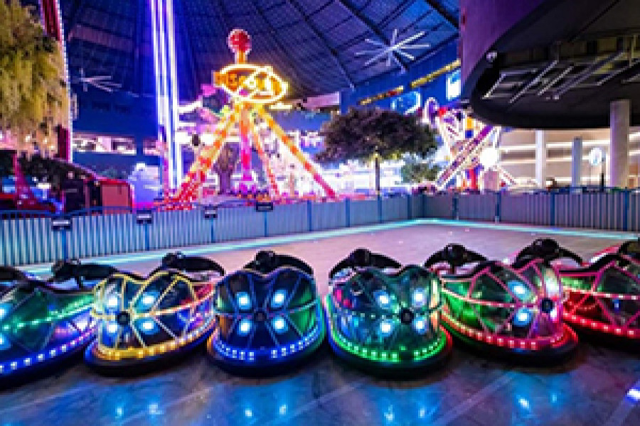
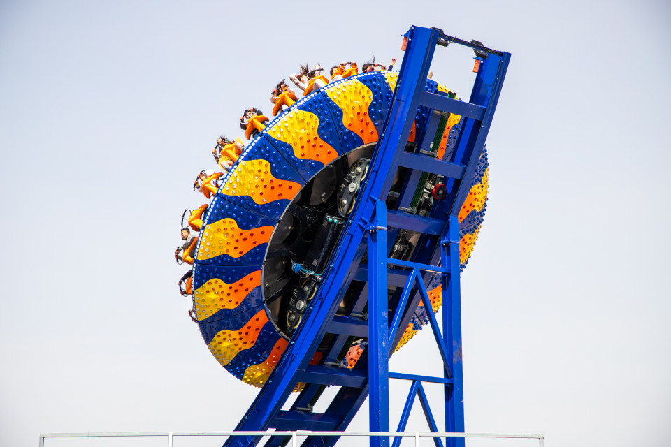
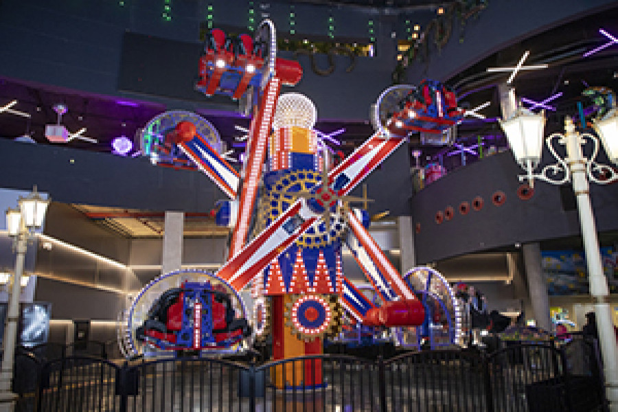
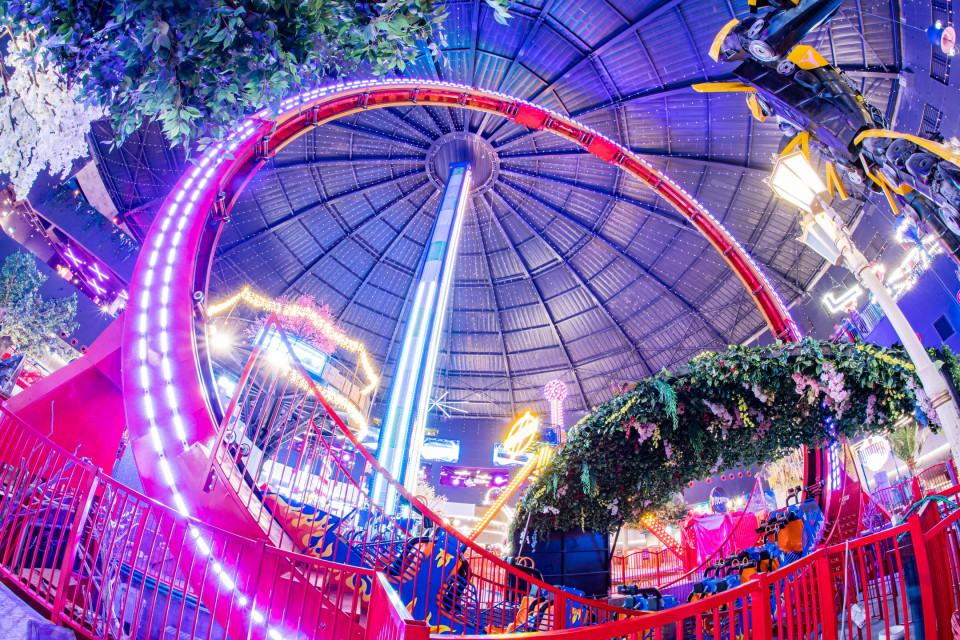
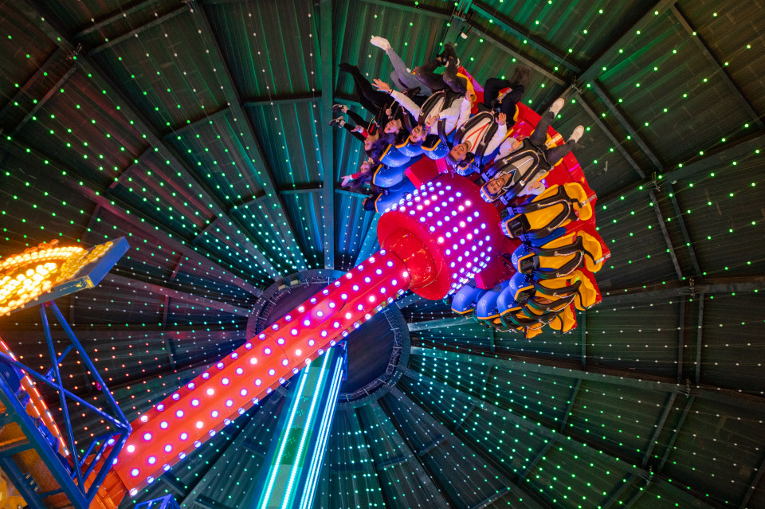
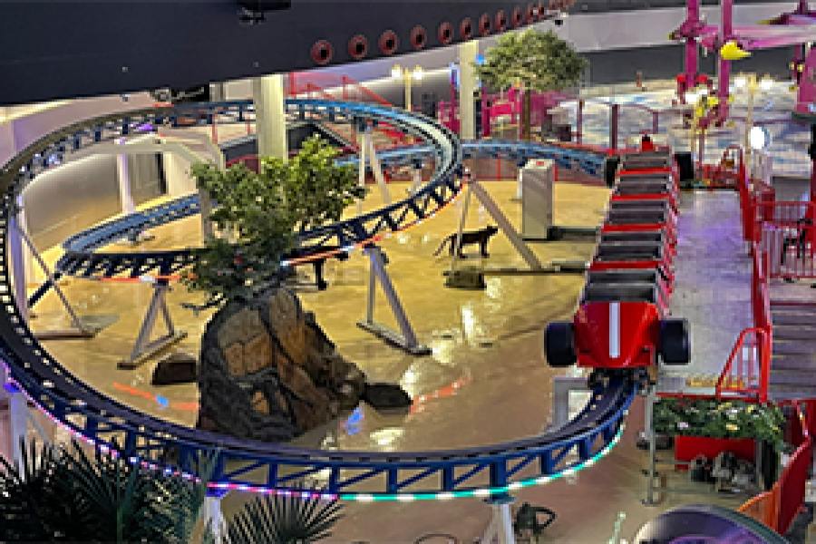

?מוכנים לזה
Magic Kass פארק השעשועים
המקורה הגדול ביותר בישראל נפתח
בהשקעה של חצי מיליארד שקל
הפארק, שהוקם בהשקעה של חצי מיליארד שקל על ידי קבוצת קס
משתרע על פני 13 דונם ומציע 12 מתקני שעשועים ואקסטרים מתקדמים
! שחלקם יושקו לראשונה בישראל
הממוקם בפארק ישראל במעלה אדומים, Magic Kass, פארק השעשועים המקורה הגדול בישראל
וניקלודיאון Magic Kass, נפתח לקהל הרחב והצטרף לשורת פארקים בינלאומיים מקורים כמו דיסני
היא להעניק חוויה ייחודית ומרהיבה לילדים ולמבוגרים, Cartoon Network,המטרה של
בדומה לפארקי השעשועים הגדולים בארה"ב ובאירופה במתחם ניתן למצוא מתקני שעשועים
.עשרות משחקי וידאו בקומה האמצעית, ג'ימבורי מאובזר, אזור סימולטורים ועוד

באמפרס
מי לא משוגע על מכוניות מתנגשות? תכירו את באמפרס,
המכוניות המתנגשות של מג'יק קאס,
מתקן שאף פארק שעשועים לא יוכל להיות שלם בלעדיו.
הבאמפרס הן המכוניות המתנגשות של העתיד.
העליה למתקן מגובה 90 ס"מ בליווי מבוגר.
מגובה 110 ס"מ ללא ליווי.

בראשית
עבור מתקנים כאלה הוקם המג'יק קאס.
הכירו את "בראשית" ועופו איתנו לחלל.
רכבת הרים חדשה וייחודית המשלבת מסלול
רחב של נסיעה בצלחת ענקית מסתובבת
הנוסעים ברכבת חווים תחושה מדהימה
של חוסר משקל תוך ישיבה כלפי חוץ.
הרכבת ממוקמת על גג המתחם עם נוף מדברי עוצר נשימה!
העלייה למתקן מגובה 1.20 מ'

נבולז
נבולז - אחד המתקנים הכי חוויתיים
שיש לפארק שלנו להציע
.
מתקן בעל זרועות ארוכות עם מושבים
המתעופפים מעלה ומטה בתחושה
של חוסר שליטה מוחלט
מיועד למבקרים מגובה 1.20 מ'

גלגל
הלופר, לולאה ענקית ומטורפת שתשלח אתכם למסע ב 360 מעלות
ובגובה של 22 מטרים !!! הלופר מתאים לאמיצים מבינכם.
מוזמנים להתרווח בקרונות הלופר ולהמתין
לרגע שהעולם עומד להסתובב בלופים מהירים במיוחד.
שימו ❤️ מתקן הלופר פועל אחת לשעה! העלייה למתקן מגובה 1.20 מ'

סוכריה
רוצים לקבל מבט על לפארק? איך אתם עם מתקנים בגובה? הכירו את הסקאי
טאוור. המגדל שיעלה אתכם לאט לגובה, ויטיס אתכם למטה במהירות שתגרום לבטן
שלכם להתהפך! העלייה מגובה 1.20 מ'.

סמבה בלון
בואו לעוף בכדור פורח בקצב הסמבה. קרוסלה כיפית ומגניבה במיוחד שתיתן לכם
את התחושה כאילו אתם בתוך סיפור אגדה צבעוני. הכדורים הפורחים עולים ויורדים
תוך סחרור קל ויוצרים חוויה מהנה ורגועה. המתקן משקיף מזווית מיוחדת על הפארק
ומתאים לכל המשפחה. העליה למתקן מגובה 90 ס"מ בליווי מבוגר. מגובה 110 ס"מ
ללא ליווי.

סטורם
הכי כיף לעלות למתקן עם כל המשפחה! הכירו את הסטורם. רכבת הרים
המשפחתית שלנו המתאימה לכל בני המשפחה. סטורם מורכבת מקרונות המחוברים
זה לזה ומציעה לכם לצאת למסע חוויתי במהירות גבוהה. העליה למתקן מגובה 90
ס"מ בליווי מבוגר מגובה 120 ס"מ ללא ליווי